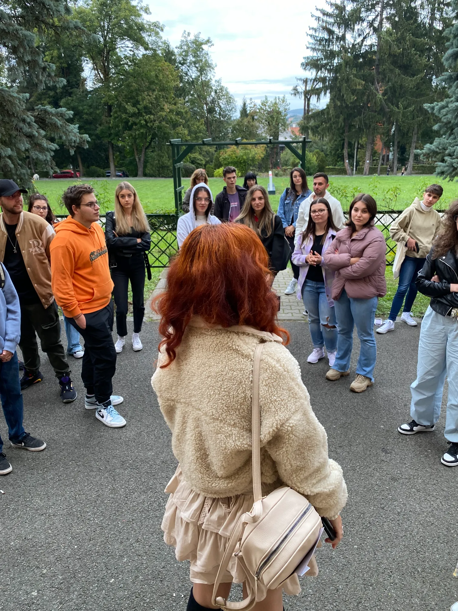
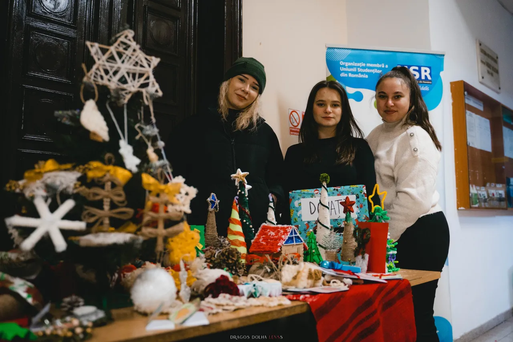
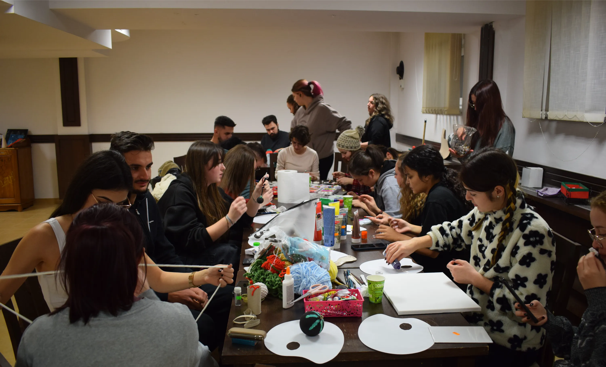
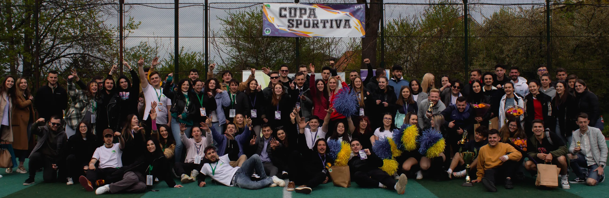
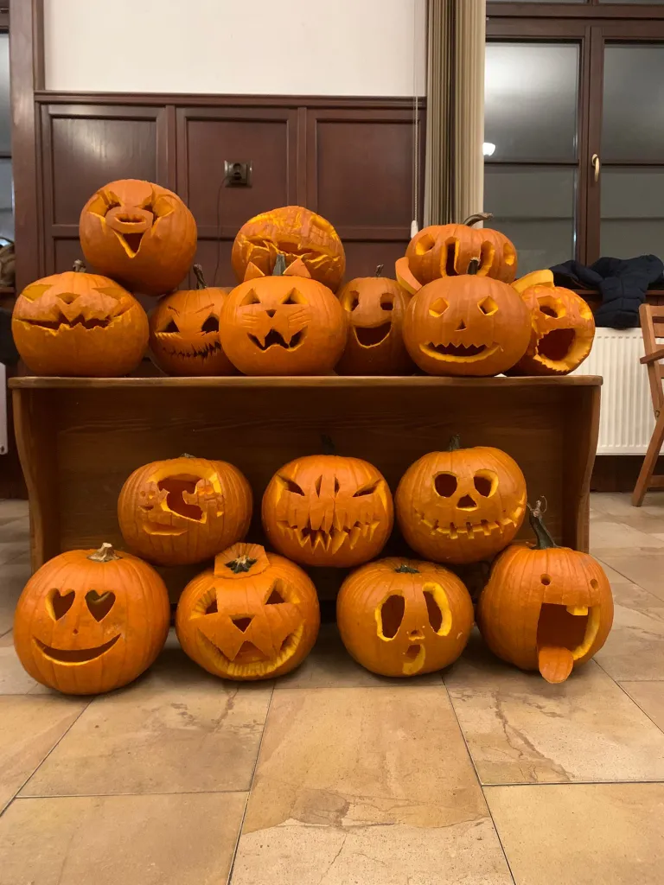
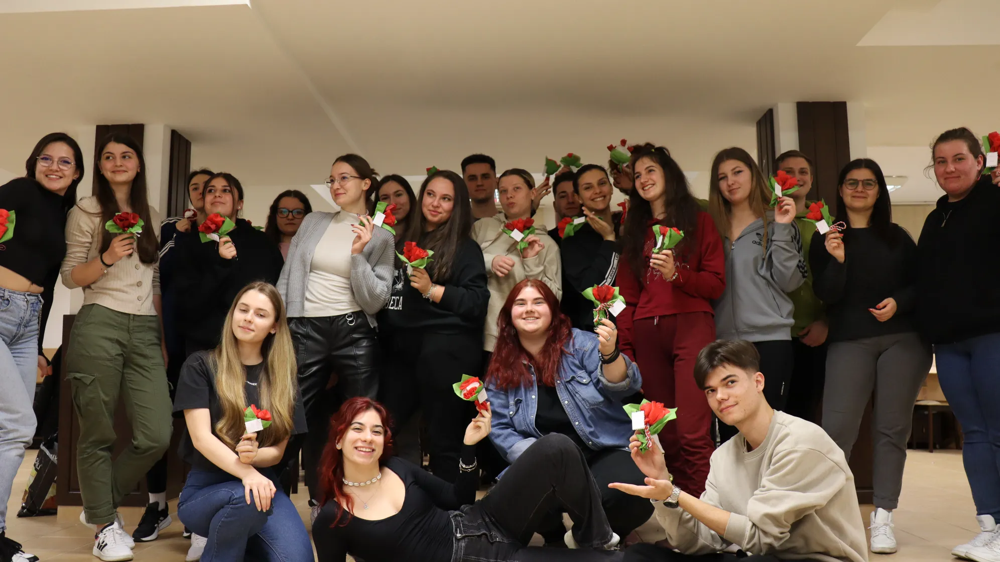
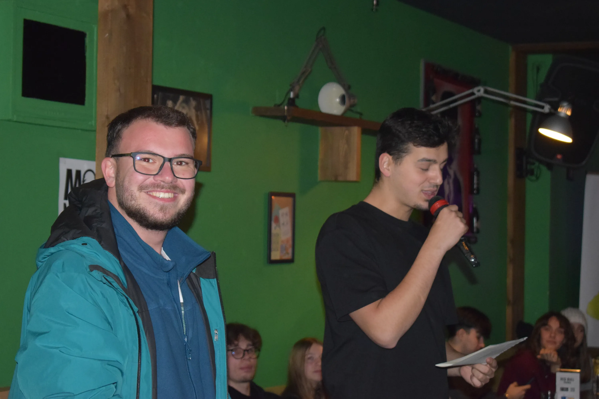
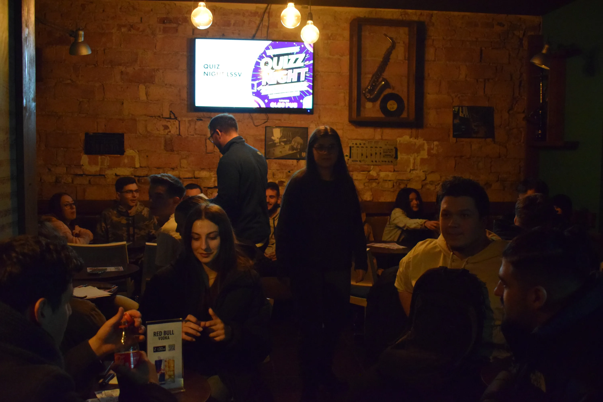
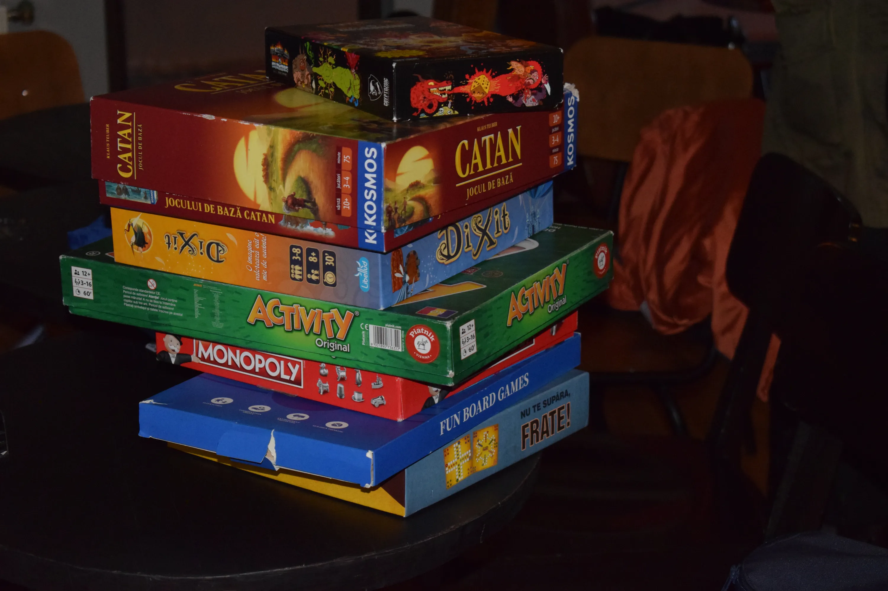
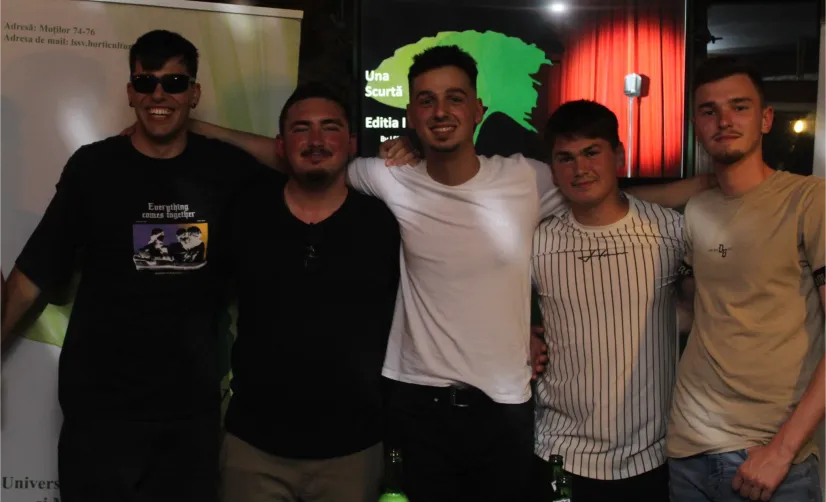

Liga Studenților Științelor Vieții
Proiecte & Evenimente
Descoperă proiectele care dau energie vieții studențești și aduc comunitatea împreună.

Târgul de Crăciun
Vezi detalii & galerie
Mediul Antreprenorial
Vezi detalii
Cupa Sportivă
Vezi detalii & galerie
Atelierul de Halloween
Vezi detalii & galerie
MĂR-țisor
Vezi detalii & galerie
Karaoke
Vezi detalii
Quiz Night
Vezi detalii
Movie Night
Vezi detalii
Board Games
Vezi detalii & galerie
Una Scurtă
Vezi detalii
Bătaie cu Apă
Vezi detalii
Arca lui Noe
Proiectul prin care voluntarii LSSV își unesc energia, empatia și dorința de implicare pentru a aduce un strop de bine într-un adăpost de căței. Aici, studenții nu doar oferă o mână de ajutor personalului, ci devin parte dintr-o comunitate care are grijă de cei mai loiali prieteni ai omului.
Vezi galerie & detalii